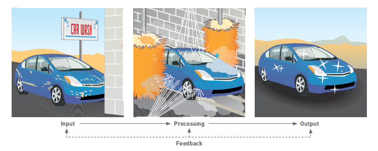
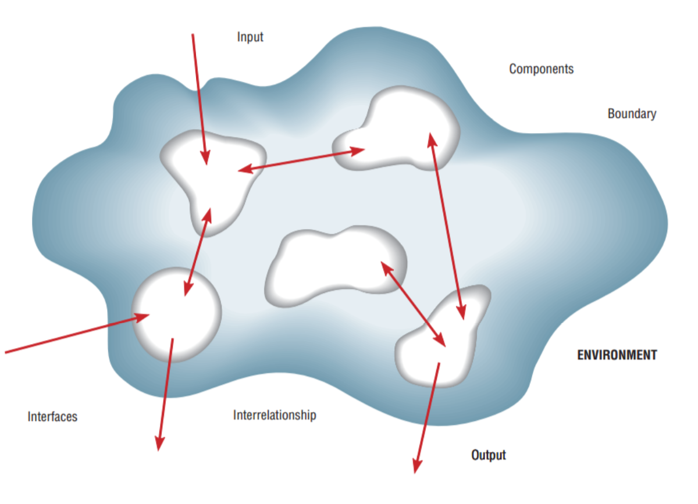
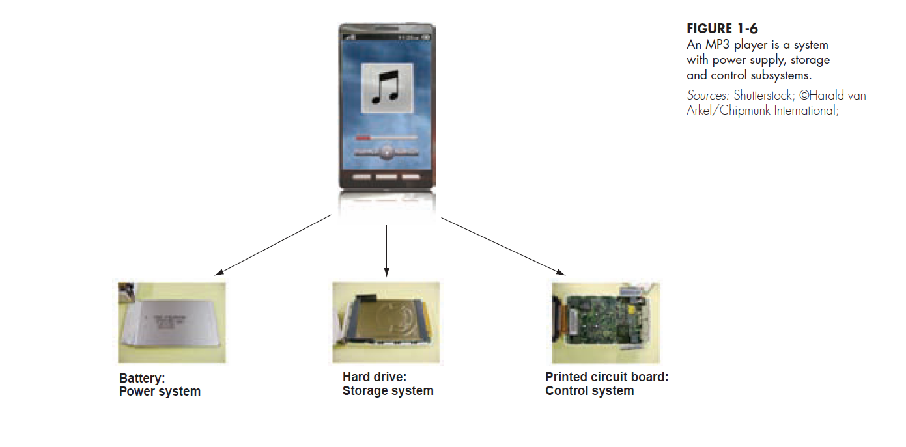
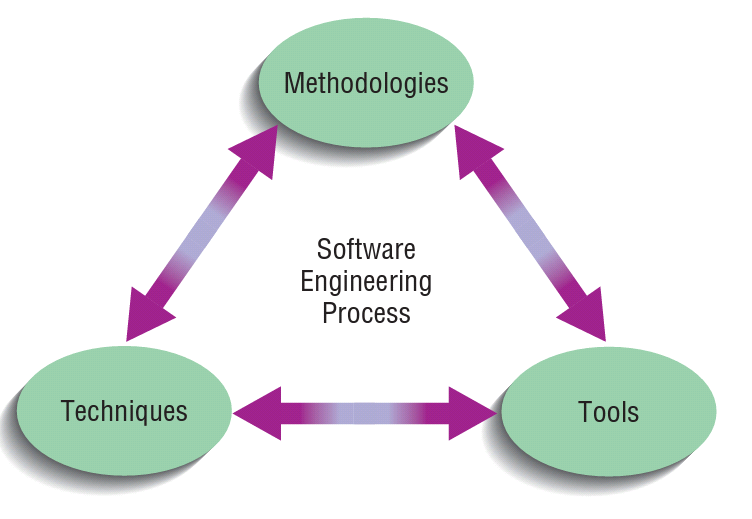
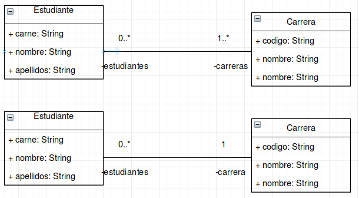
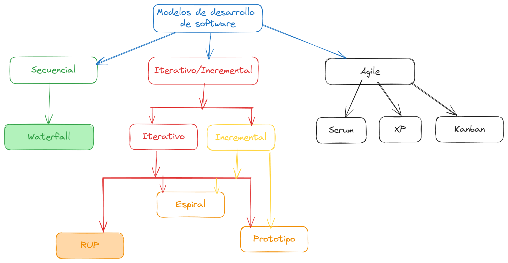
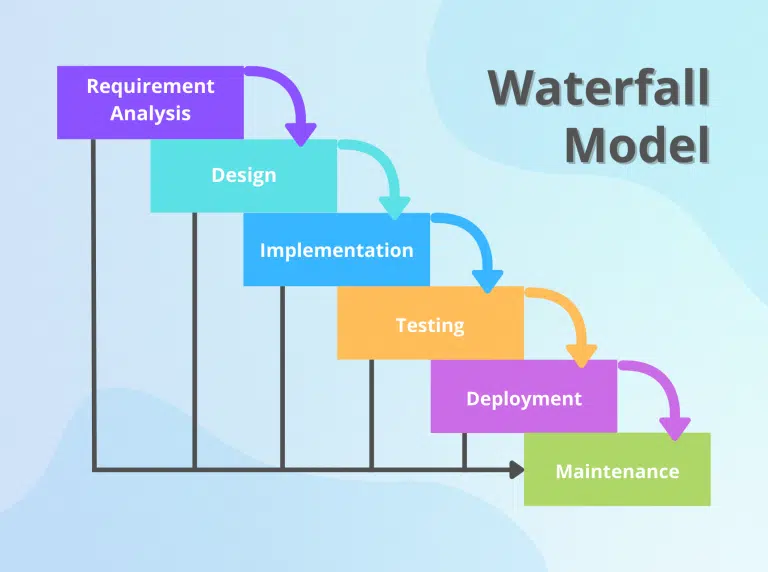
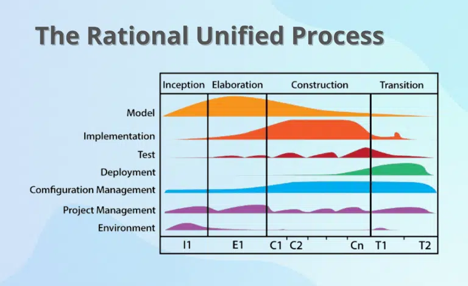

Curso Análisis y Diseño de Sistemas II Semestre 2026
El puente


Tomado de Valacich, J. (2012, p. 34)
¿Qué datos recibe y de quién?
¿Qué reglas aplica?
¿Qué produce y para quién?
Los programas que ejecutan la lógica
Los equipos donde se ejecuta
La red que conecta todo
Dónde se almacena la información
Cómo se opera el sistema
Quienes lo usan y lo mantienen

Dividir un sistema en módulos de un tamaño relativamente uniforme
Los módulos simplifican el diseño del sistema
Los subsistemas que dependen uno del otro están acoplados
→ Buscamos acoplamiento bajo
Grado en el que un subsistema realiza una sola función
→ Buscamos cohesión alta
Refinamiento del conocimiento a través de sucesivos niveles de abstracción y de representación
Trazabilidad de cada ítem de información entre los niveles de abstracción

De naturaleza en el software

Asociado con el rendimiento y los tiempos de respuesta esperados del software
El software enfrenta muchas amenazas que debe subsanar
Comprometen la confidencialidad, disponibilidad e integridad de la información
Grado en que el sistema puede crecer luego de su despliegue inicial
¿Qué sistemas necesitan estar operacionalmente disponibles todo el tiempo?
¿Cómo lograr un sistema tolerante a fallas?
De naturaleza en el sistema — hardware y software
Kendall y Kendall (2019)
A logical model shows what the system must do, regardless of how it will be implemented physically
A physical model is built that describes how the system will be constructed



 Seguridad
Seguridad